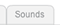

Gravar sons
Para gravar um som, clique em 
e no microfone . Em seguida, clique no botão de gravação:
. Em seguida, clique no botão de gravação:

e no microfone
Digite um nome para o som:

Em seguida, clique em e use este bloco:

Escolha o nome do som no menu suspenso.
Escolha o nome do som no menu suspenso.